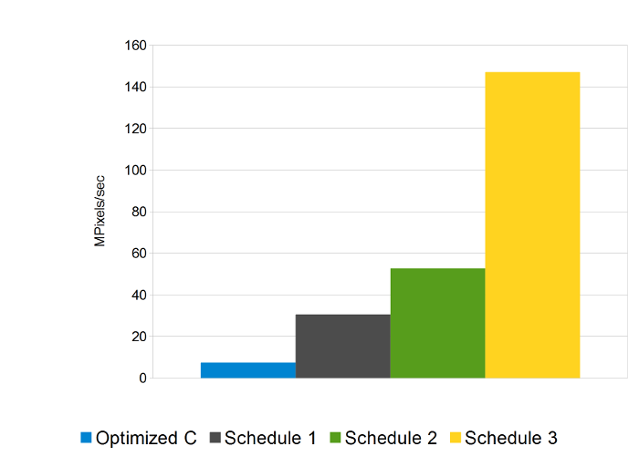
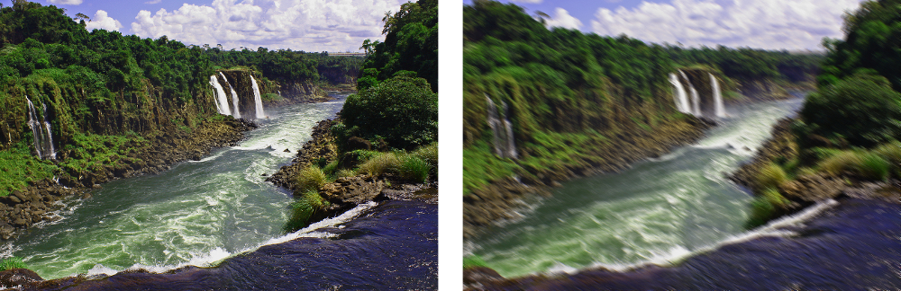
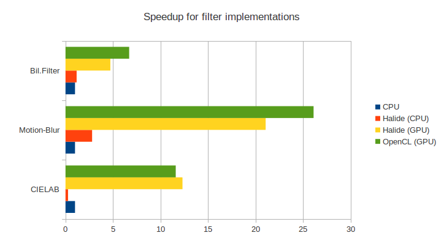

CPU frequencies have stalled for a while.
- But transistor density continues to increase accordingly Moore's Law
- CPU: vectorization and multi-core architectures
- GPU: floating-point processing at the cost of flexibility
- The free lunch is over!
CPU frequencies have stalled for a while.
UniformImage input(UInt(16), 3);
Var x,y,c;
Func clamped, blur_x, blur_y;
// Don't access image out of the bounds
clamped(x,y,c) = input(clamp(x, 0,input.width() -1),
clamp(y, 0,input.height()-1), c);
// Horizontal Pass
blur_x(x,y,c) = ( clamped(x-1,y,c)
+ clamped(x ,y,c)
+ clamped(x+1,y,c))/3.0f;
// Vertical Pass
blur_y(x,y,c) = ( blur_x(x,y-1,c)
+ blur_x(x,y ,c)
+ blur_x(x,y+1,c))/3.0f;
blur_x.root(); blur_y.root(); blur_x.root().parallel(y); blur_y.root().parallel(y); blur_y.split(y, y_out, y_in, 8); blur_y.parallel(y_out); blur_y.vectorize(x, 8); blur_x.chunk(y_out, y_in); blur_x.vectorize(x, 8);


The Bilateral Filter is a non-linear technique that can blur an image while respecting strong edges. Its ability to decompose an image into different scales without causing haloes after modification has made it ubiquitous in computational photography applications such as tone mapping, style transfer, relighting, and denoising.
Paris et al. Bilateral filtering: Theory and applications

| ... | CPU | OpenCL (GPU) | Halide (CPU) | Halide (GPU) |
|---|---|---|---|---|
| CIELAB | 52 | 50 | 16 (2) | 16 (1) |
| Motion-Blur | 48 | 54 | 26 (2) | 26 (3) |
| Bil. Filter | 155 | 306 | 36 (6) | 36 (8) |
vmaolive@dca.fee.unicamp.br